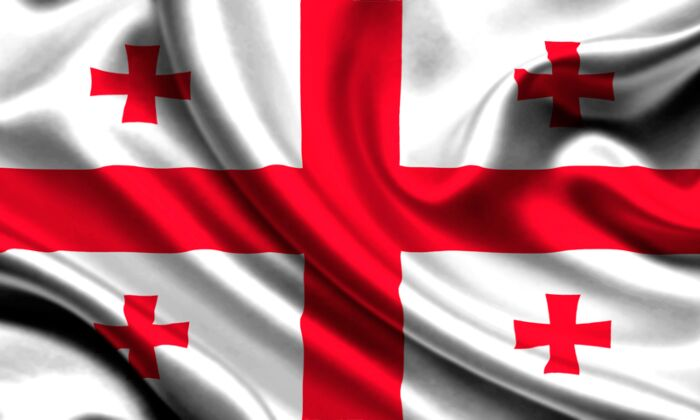

საქართველოს სახელმწიფო დროშა — საქართველოს ეროვნული სიმბოლო გერბთან და ჰიმნთან ერთად, შემოღებულ იქნა საქართველოს ორგანული კანონის საფუძველზე, რომელიც ძალაში შევიდა საქართველოს პრეზიდენტის მოვალეობის შემსრულებლის ხელმოწერის შემდეგ 2004 წლის 14 იანვრიდან.ამ კანონით დადგენილი საქართველოს სახელმწიფო დროშა არის საქართველოს სახელმწიფო დროშის ერთადერთი ვარიანტი. აკრძალულია საქართველოს სახელმწიფო დროშად სხვა დროშის გამოყენება. იგი ადგენს საქართველოს სახელმწიფო დროშის, როგორც სახელმწიფო სიმბოლოს, აღწერილობას, მისი გამოყენებისა და დაცვის წესს.საქართველოს სახელმწიფო დროშა არის მართკუთხა თეთრი ფერის ქსოვილი, რომლის ცენტრალურ ნაწილში გამოსახულია დროშის ოთხივე გვერდთან დაკავშირებული სწორკუთხა წითელი ფერის დიდი ჯვარი; ჯვრის ვერტიკალურ-ჰორიზონტალური მკლავებით გამოყოფილ ოთხკუთხედებში გამოსახულია ოთხი იმავე ფერის, ბოლნურ-კაცხური ჯვარი. საქართველოს სახელმწიფო დროშის სტანდარტული ზომები და ზუსტი გამოსახულება დგინდება საქართველოს პრეზიდენტის ბრძანებულებით. დროშის მიმდინარე ვერსია დადგენილია პრეზიდენტის 25 იანვრის